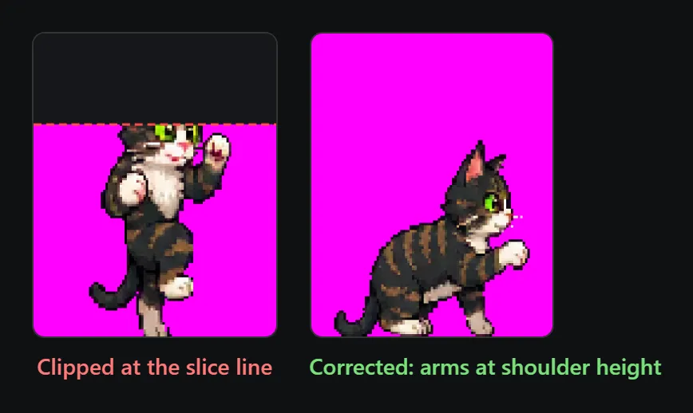
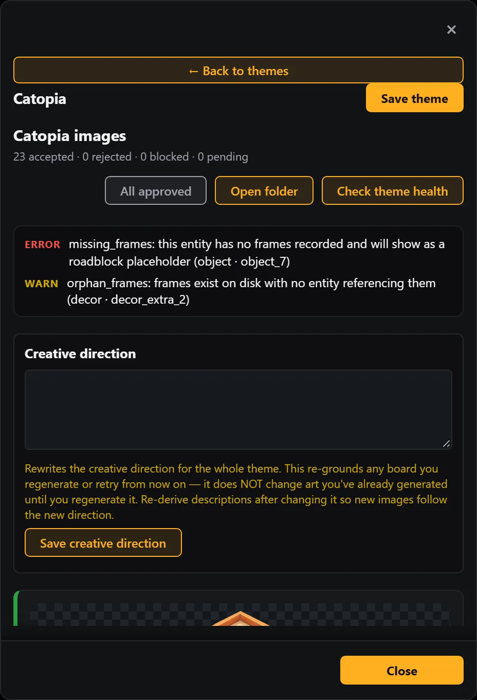

TycoonAgents Handbook / Chapter 08 / Part II · Theme Maker
When a board misbehaves
Generation runs a lot of image requests back to back, and every so often one of them comes back wrong — blocked, rate-limited, clipped, or just off-style. None of this means the run failed. Each item on a theme board can be retried on its own, so a bad frame costs you a redo, not a restart.
Before any AI plan or image generation runs, the Theme Service screens the text you're about to send: your theme description, your Creative Direction, and each board's names and visual descriptions — never the service's own prompt template underneath them. This check happens before anything is charged, so a block never costs a credit.
A block is scoped to the field that tripped it, but the field can cover more than one item — flag one character's description on a roster sheet and the whole sheet's request is blocked, not just that character. The message names both the category and the field, for example:
Blocked by content screening (illicit): Sana Qi's description. No credit was spent. Rephrase it and retry.
Rephrase the named field. Describe the function or look you're after instead of the word that tripped it — "syringe" reads cleaner as "injector" or "medical tools," for instance.
Retry. Nothing else on the sheet needs to change — only the flagged field caused the block.
Note
Uploaded reference images are also checked for likeness — a real person's face in a reference will block the upload. Use a stylized or original reference instead.
Tip
Content screening is separate from the image provider's own moderation, covered next in § 8.2 — a screening block never reaches the image provider at all, so it never counts toward the provider's own refusal lockout.
If an item comes back with the message below, the image provider's safety filter rejected the request outright — no image was produced and no retry will fix it without a change.
The image provider blocked this image request. Revise the prompt or input images, then retry.
Reword the item's description. Open the item's description editor and remove anything that could read as violence, gore, real celebrities, or branded/trademarked terms — even indirectly.
Retry just that item. Use the item's own retry action on the review screen — you don't need to regenerate the whole board.
Tip
Moderation is judged per-request, not per-theme. A vivid description on one object rarely means the rest of the board is at risk.
Note
These are refusals from the image provider itself, not the pre-charge content screening in § 8.1 — the attempt is refunded automatically, same as a provider outage. But it also counts as a strike: 3 of them within a trailing 24 hours locks the account, and unlocking it takes reaching out through Submit Feedback (§ 14.6) — it doesn't clear on its own.
A 429 (rate limited) or any 5xx (provider-side server error) is treated as retryable — the request didn't fail because of anything you wrote. No credits are charged for either.
A rate-limit message names the limit and how long to wait, when the backend sends that detail, for example:
Too many requests — the Theme Service allows up to 5 generations per minute. Try again in 42 seconds. No credits were charged.
A 5xx shows as "Theme Service unavailable" instead — no credits were charged, and if you started several generations at once, the message suggests trying fewer at a time.
Note
Wait for the time named in the message and retry the item. If you don't see a wait time, give it a few minutes before retrying — space retries out rather than hammering the same item.
Note
An outright malformed request comes back as "The Theme Service rejected this request (code). No credits were charged", with a short code identifying what was wrong. These are rare and usually mean a field is empty or out of range — check the item's fields and retry.
Tip
Transient errors (rate limits, server errors, unavailable) clear once the request that hit them succeeds — they don't linger after a successful Retry, and they never survive a restart of your editor.
Character sprite boards are sliced into rows and columns after the image comes back. Poses with raised arms or mid-jump silhouettes on the last row of the board can get their tops clipped by the slice line — this is a constraint of how the sheet is cut, not something you can toggle off.

Edit the pose description for that character to describe a compact, shoulder-height pose instead of a full extension or jump.
Retry the character. The rest of the board's poses are unaffected.
Note
Walking animations are usually the hardest frames to get looking right, and they are the most common reason for retries. Expect to retry a walk cycle more often than any other pose.
Rival, object, and decor boards are sliced into a fixed grid. Prompts for these boards are built with a silhouette budget — guidance that keeps each figure's limbs, tentacles, or particle effects inside its own cell — but an unusually wide or sprawling description can still push past it and bleed into the neighboring cell.
On the rival board specifically, each interior grid line is gutter-aware: the slicer looks for the nearest fully-empty column or row near the expected cut and snaps to it, rather than always cutting exactly on the proportional line. This absorbs a small overflow automatically — a limb that spills a few pixels past the nominal boundary usually still slices cleanly — but a description that blows well past the budget can still bleed through.
Tip
Retry with phrasing like "compact, centered, fits fully in frame" (objects/decor) or "limbs tucked in, no wide reach" (rivals) added to the item's description, then retry just that item.
The environment is one background image generated from a stage guide. Two recurring issues: a stray outline color surviving into the final art, or clutter placed on the floor area characters actually walk on.
Edit the environment description to explicitly keep the walkable floor area empty and clear.
Regenerate the environment from the review screen.
Every theme is checked for entities whose frames are missing, empty, or orphaned — across agents, rivals, buildable objects, decor, expressions, badge icons, projectile FX, and poof FX. An entity that fails this check shows as a roadblock placeholder in the panel instead of its art.
| Issue | Meaning |
|---|---|
| missing_frames | The entity has no frames recorded at all |
| empty_frames | The entity has a frames array, but it's empty |
| orphan_frames | Frames exist on disk with no entity referencing them |

Note
A board can be marked accepted with no frames recorded — accepting a board and slicing its frames are decoupled steps. If you see this, use Resume on that board: it re-slices the raw image that's already on disk, at no additional API cost.
If later boards start looking off relative to earlier ones, don't rewrite each item's description by hand. Use the review screen's Creative Direction editor instead.
Open Creative Direction on the review screen and describe the style correction you want.
Save it. It re-grounds every future regeneration — it never touches art already generated.
Retry the off-style items so they regenerate under the new direction.